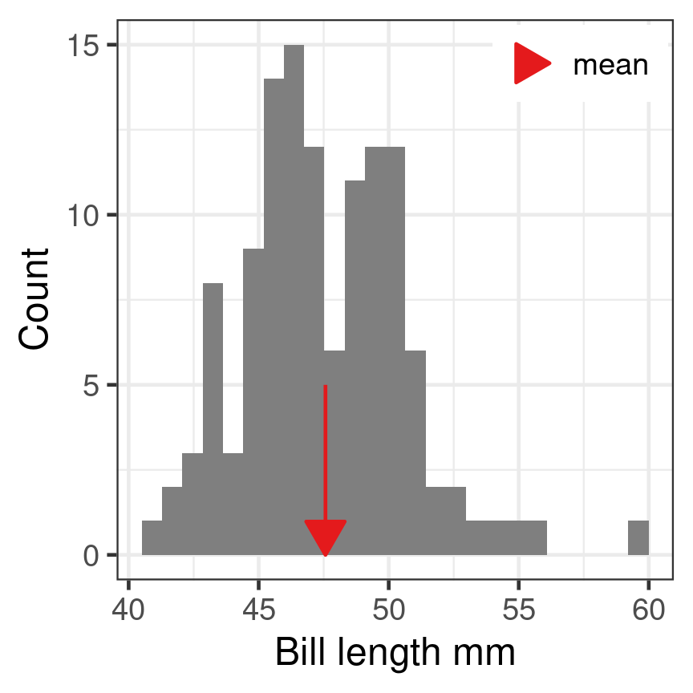
Descriptive statistics and Introduction to statistical inference
Bio300B Lecture 6
Richard J. Telford (Richard.Telford@uib.no)
Institutt for biovitenskap, UiB
22 September 2025
Describing a distribution
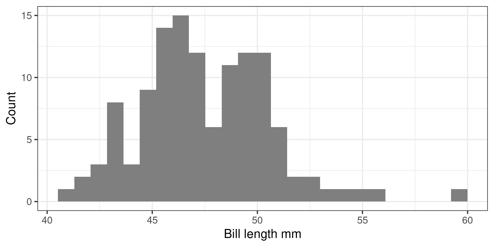Midpoint
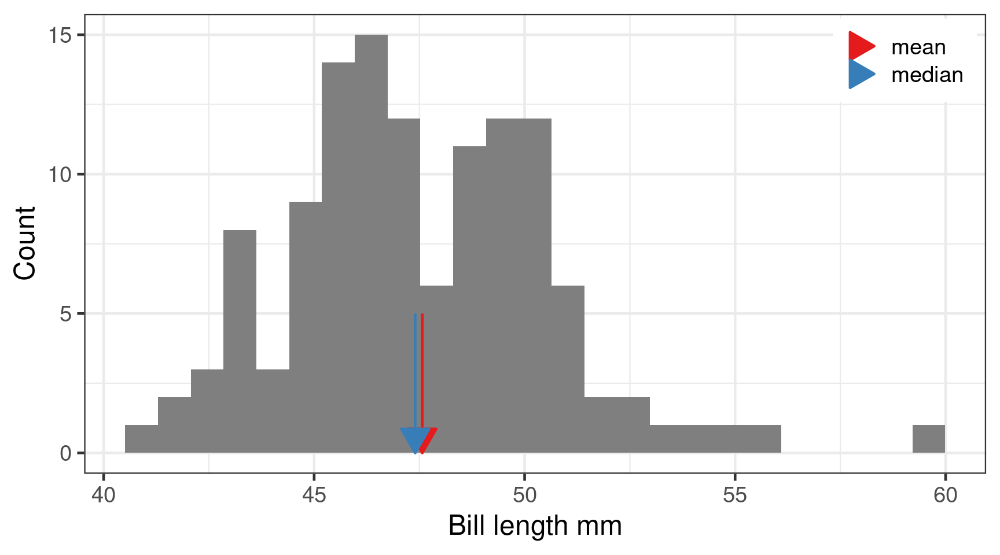Mean
\[\overline{x} = \frac{\sum_{i=1}^n x_i}{n}\]
- Sum of all observations divided by number of observations
- Centre of gravity of the data
mean()
Median
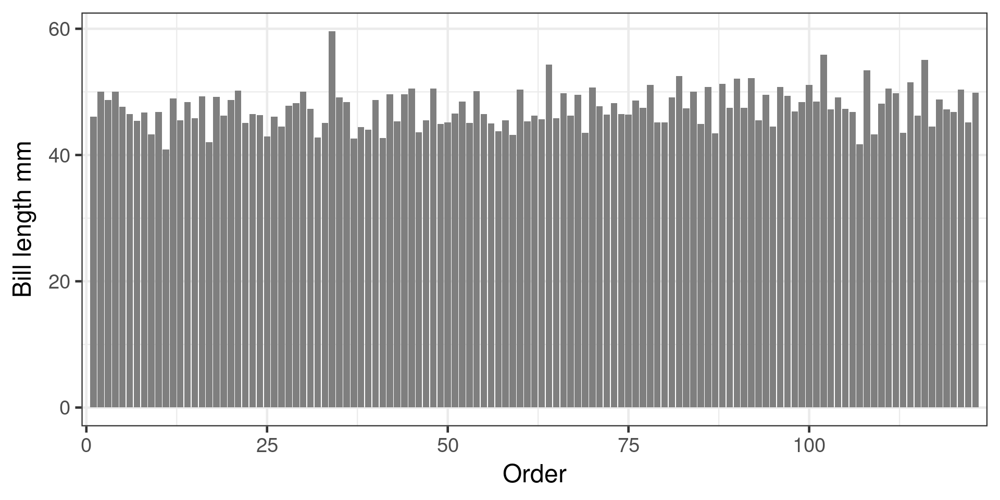- Sort from minimum to maximum
- Observation in the middle is the median
median()
Mean vs Median
Mean vs Median
Calculating Mean and Median in R
Use na.rm = TRUE to remove missing values.
[1] 44.45# A tibble: 1 × 1
med
<dbl>
1 44.4# A tibble: 3 × 2
species med
<fct> <dbl>
1 Adelie 38.8
2 Chinstrap 49.6
3 Gentoo 47.3Spread
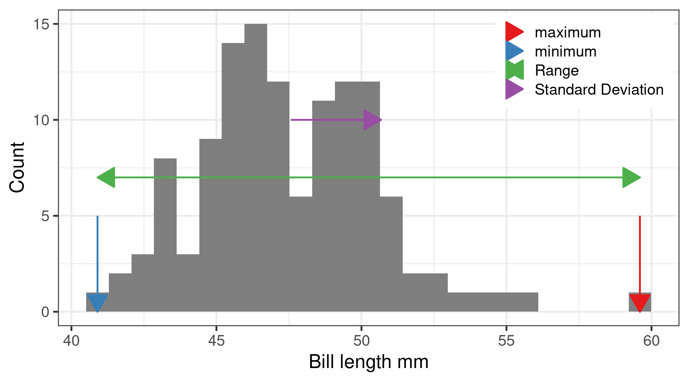Minimum, maximum and range
min()max()
Range is difference between smallest and largest.
Variance
The average squared distance around the mean var()
Population variance
\[\sigma^2 = \frac{\sum_{i=1}^n (x_i - \mu)^2}{n}\] Where \(\mu\) is the population mean.
Sample variance
\[s^2 = \frac{\sum_{i=1}^n (x_i - \overline{x})^2}{n-1}\] Where \(\overline{x}\) is the sample mean.
Standard deviation
Square root of the variance \[s = \sqrt{s^2}\] \[s = \sqrt{\frac{\sum_{i=1}^n (x_i - \overline{x})^2}{n-1}}\] Same units as variable
sqrt(var())
sd()
Higher moments
Skew

Right skew
positive skew e1071::skewness()
Kurtosis
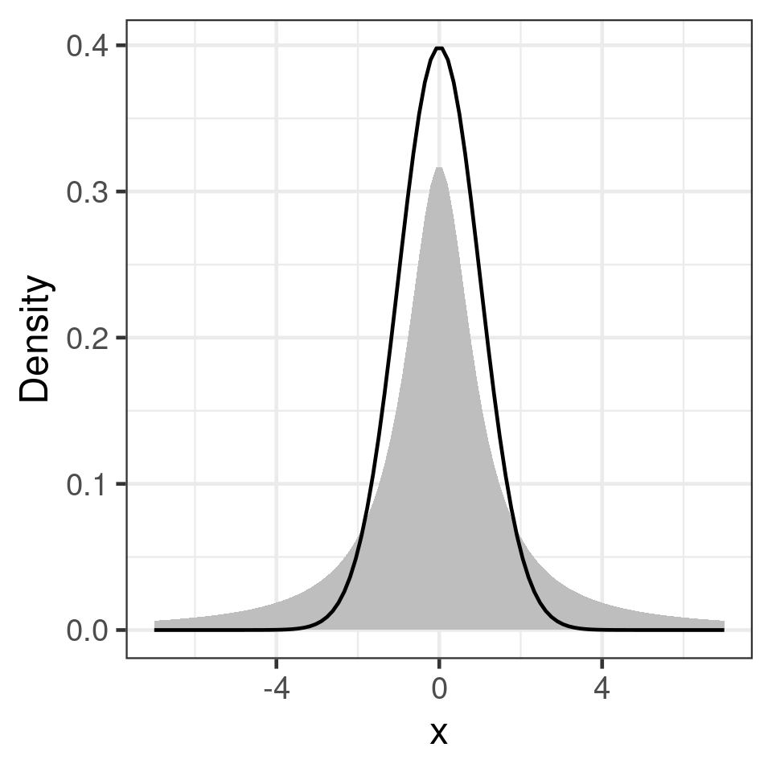heavy tails
e1071::kurtosis()
Making inferences about the population
Sample: 123 Gentoo penguins
Population: All Gentoo penguins in the Palmer Archipelago.
What can we infer about the population from the sample?
Uncertainty in the mean
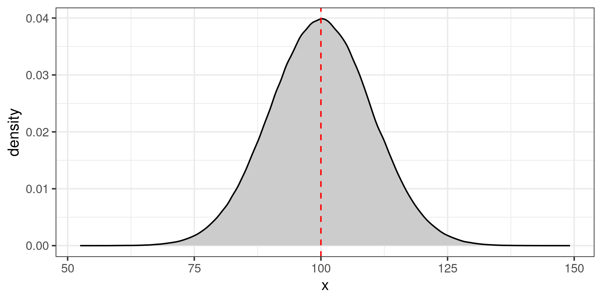Population of 1,000,000 indviduals
Large (100 individuals) or small (20 individuals) samples
Histograms of samples
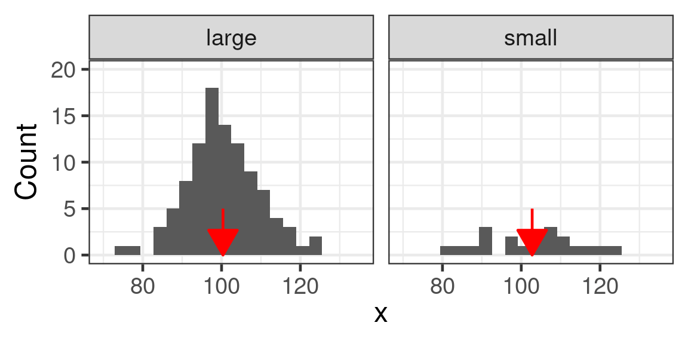Histogram of sample means
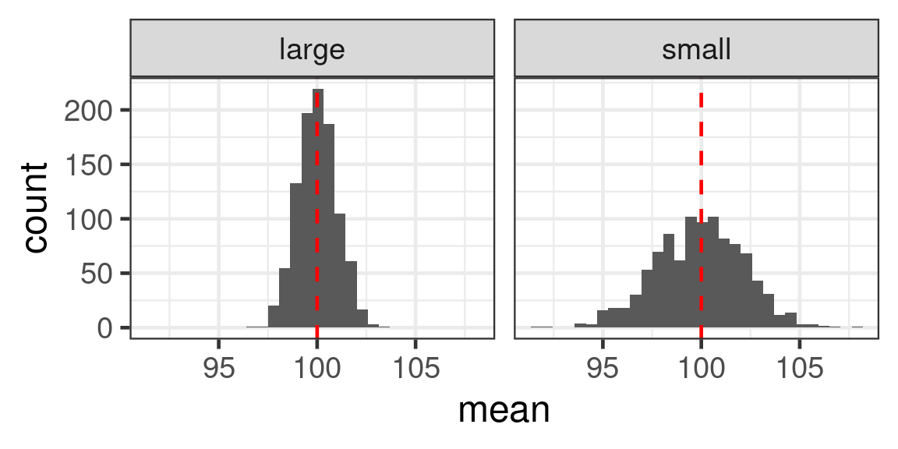Standard error of the mean
Standard deviation divided by square root of number of observations
\[SE = \frac{s}{\sqrt{n}}\] Large n - small SE - reliable estimate of mean
Small n - large SE - less reliable estimate of mean
Confidence interval
If experiment repeated many times, confidence level represents the proportion of confidence intervals that contain the true value of the unknown population parameter.
95% confidence interval will contain true value in 95% of repeat experiments
Easily misunderstood.
(Bayesian credibility intervals are much more intuitive)
Confidence interval of the mean
95% confidence interval
Mean \(\pm\) 1.96 * SE
Why 1.96?
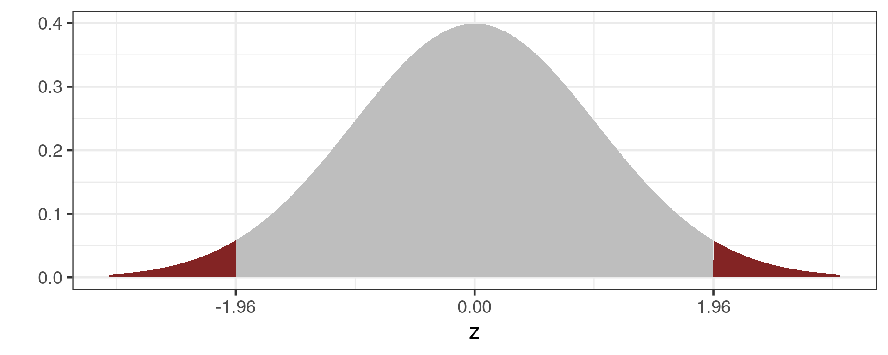Grey area is 95% of the normal distribution
Estimated means with 95% confidence interval for different sample sizes
Choosing a statistical test
- What is the hypothesis?
- What is the underlying distribution of your response variable?
- What type of the predictor(s)?
- What type of observational or experimental design do you have?
The hypothesis
The statistical hypothesis needs to match your scientific hypothesis
Hypothesis example:
H0: The bill length of Gentoo penguins does not depend on sex.
The predictors
- Categorical (sex, species)
- Continuous (body mass)
- both (with > 1 predictor)
Need to know so we can code predictor variables and interpret the output of our models.
The response
- Continuous (bill length)
- count (number of penguins)
- binary (sex, survived/died)
- proportion (8 out of 10)
Statistical model families (lm, lme, glm etc.) differ in assumptions about the underlying distribution of the response variable.
Gaussian (Normal) distribution
Often assumed for continuous distributions, body mass, egg shell thickness

Poisson distribution
Count data
Shape varies with mean
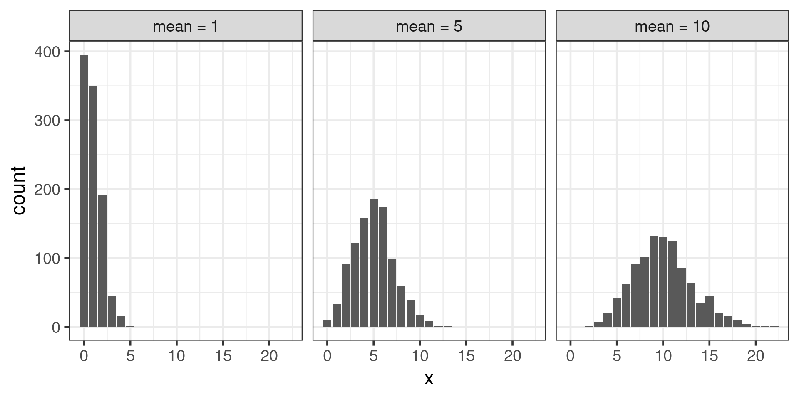Experimental design
- Independent observations?
- time series?
- clustered design?
Key
- Independent observations
- Continuous response = linear models (
lm(),t.test()) - Count/binary/proportion = generalised linear models (
glm())
- Continuous response = linear models (
- Clustered observations
- Continuous response = linear mixed effect models (
lme(),lmer()) - Count/binary/proportion = generalised linear mixed effect models (
glmer())
- Continuous response = linear mixed effect models (
A t-test
Compare means
H0: Bill length does not depend on sex in Gentoo penguins
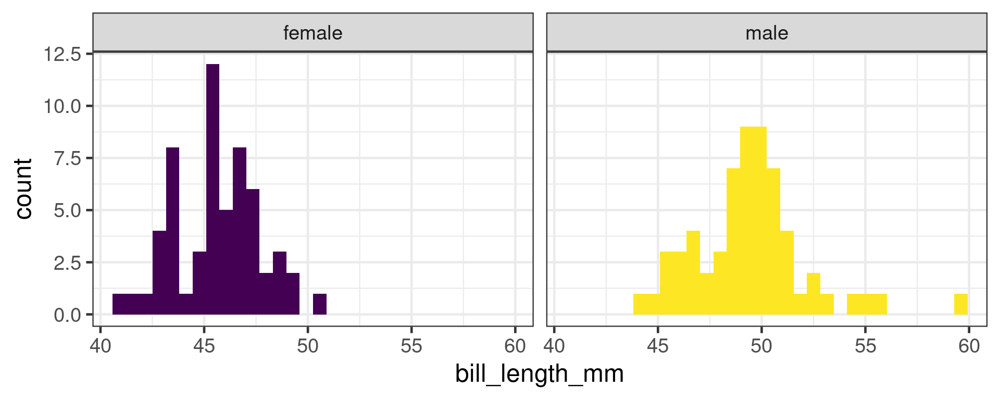t-test in R
Welch Two Sample t-test
data: bill_length_mm by sex
t = -8.8798, df = 111.31, p-value = 1.315e-14
alternative hypothesis: true difference in means between group female and group male is not equal to 0
95 percent confidence interval:
-4.782478 -3.037477
sample estimates:
mean in group female mean in group male
45.56379 49.47377 P values
Often misinterpreted
- Not a measure of effect size or practical significance
- Not the probability that hypothesis is true
- Strongly affected by sample size
If there were actually no effect (if the true difference between means were zero) then the probability of observing a value for the difference equal to, or greater than, that actually observed would be p=0.05.
Many assumptions
Confidence intervals are more interpretable
Type 1 and type 2 errors
| Null hypothesis is | True | False |
|---|---|---|
| Rejected | Type I error False positive |
Correct decision True positive |
| Not rejected | Correct decision True negative |
Type II error False negative |
One sided Z-test
#| label: power-app
#| standalone: true
#| viewerHeight: 600
library(shiny)
ui <- fluidPage(
# Application title
titlePanel("One sided Z-test"),
sidebarLayout(
sidebarPanel(
sliderInput("delta", "True mean", value = 1, min = 0.1, max = 2),
sliderInput("sd", "Standard deviation", value = 1, min = 0.5, max = 2),
sliderInput("n", "Sample size, n", value = 10, min = 10, max = 100),
radioButtons("alpha", "Significance level, alpha", choices = c(0.05, 0.01, 0.001), selected = 0.05)
),
# Show a plot of the generated distribution
mainPanel(
plotOutput("distPlot")
)
))
server <- function(input, output, session) {
output$distPlot <- renderPlot({
n <- input$n
alpha <- as.numeric(input$alpha)
delta <- input$delta
sd <- input$sd
mx <- 2.5
mn <- -1.5
crit <-
qnorm(
alpha,
mean = 0,
sd = sd / sqrt(n),
lower.tail = FALSE
)
H0 <- data.frame(x = seq(mn, mx, length = 201))
H0$y <- dnorm(x = H0$x, mean = 0, sd = sd / sqrt(n))
H0$what <- ifelse(H0$x < crit, yes = "True negative", no = "False positive")
H0$hypothesis <- "H[0]"
H1 <- data.frame(x = seq(mn, mx, length = 201))
H1$y <- dnorm(x = H1$x, mean = delta, sd = sd / sqrt(n))
H1$what <- ifelse(H1$x < crit, yes = "True negative", no = "False positive")
H1$hypothesis <- "H[1]"
par(oma=c(2,2,0,0), mar=c(1.2,2,2,1), mfrow=c(2,1), cex = 1.5, tcl = -0.1, mgp = c(3, 0.2, 0))
plot(H0$x, H0$y, type = "n", main = expression(H[0]~is~true), xlab = "", ylab = "")
polygon(H0$x, H0$y)
polygon(c(H0$x[H0$x > crit][1], H0$x[H0$x > crit]), c(0, H0$y[H0$x > crit]), col = "#832424")
abline(v = crit)
plot(H1$x, H1$y, type = "n", main = expression(H[1]~is~true), xlab = "", ylab = "")
polygon(H1$x, H1$y)
polygon(c(H1$x[H1$x > crit][1], H1$x[H1$x > crit]), c(0, H1$y[H1$x > crit]), col = "#832424")
abline(v = crit)
mtext(text="x",side=1,line=0,outer=TRUE, 1.5)
mtext(text="Density",side=2,line=0,outer=TRUE, cex = 1.5)
})
}
shinyApp(ui, server)The need for power
With little power:
- May not be able to reject H0 when it is false
- Exaggerate effect size
Lots of power
- Probably can reject H0 when it is false
- More precise estimates of effect size
- More expensive
Need to do power analysis before experiment.
Components of a power analysis
- Effect size
- Type I error rate (significance level - conventionally set to 0.05)
- Power (1 - Type II error rate) - conventionally aim for 0.8
- Number of observations
Can solve for any of these
Typically want to know how many observations needed.
Analytic power analysis
Some power tests in base R.
power.t.testpower.anova.testpower.prop.test
More in pwr package
Power t test
Two-sample t test power calculation
n = 63.76561
d = 0.5
sig.level = 0.05
power = 0.8
alternative = two.sided
NOTE: n is number in *each* groupEffect size is Cohen’s d \(d = \frac{\mu_1 - \mu_2}{\sigma}\)
- Power test should be done before experimental work to determine sample size
- Analytical and simulation approaches are possible
- Key challenge is estimating effect size
- existing estimates are likely biased
- minimum interesting effect size